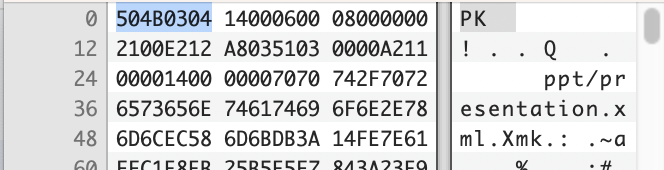

Binary Identification in PRONOM
Last updated on 2026-08-18 | Edit this page
Overview
Questions
- How we record file format signatures in PRONOM?
- What does a signature look like?
- How do we identify a ZIP file?
Objectives
- Understand the basic principles of a PRONOM file format signature?
- Understand a ZIP file’s relationship to PRONOM and container file identification?
Binary Signature File Format Identification
- A PRONOM file format entry can be associated with zero-to-many file format signatures. Matching any signatures will return a hit
- A File Format signature can be anchored to the beginning of the file (BOF), the end of the file (EOF), or at a variable (VAR) location within the file. It can also be offset to the BOF or EOF, either absolutely, or by a range
- Binary signatures in PRONOM are always expressed using hexadecimal notation
Binary Signature File Format Identification additional syntax
-
??: wildcard matching any pair of hexadecimal values (i.e. a single byte).
e.g.: 0x0A FF ?? FE would match 0x0A FF 6C FE or 0x0A FF 11 FE.
-
*: wildcard matching any number of bytes (0 or more).
e.g.: 0x0A FF * FE would match 0x0A FF 6C FE or 0x0A FF 6C 11 FE.
-
{n}: wildcard matching n bytes, where n is an integer.
e.g.: 0x1C 20 {2} 4E 12 would match 0x1C 20 FF 15 4E 12.
-
{m-n}: wildcard matching between m-n bytes inclusive, where m and n are integers or ‘*’.
e.g.: 0x03 {1-2} 4D would match 0x03 3C 4D or 0x03 3C 88 4D. e.g.: 0x03 {2-*} 4D would match 0x03 3C 88 4D or 0x03 3C 88 3F 4D.
Binary Signature File Format Identification additional syntax
-
(a|b): wildcard matching one from a list of values (e.g. a or b), where each value is a hexadecimal byte sequence of arbitrary length containing no wildcards.
e.g.: 0x0E (FF|FE) 17 would match 0x0E FF 17 or 0x0E FE 17.
-
\[a:b\]: wildcard matching any sequence of bytes which lies lexicographically between a and b, inclusive (where both a and b are byte sequences of the same length, containing no wildcards, and where a is less than b).
e.g. 0xFF \[09:0B\] FF would match 0xFF 09 FF, 0xFF 0A FF or 0xFF 0B FF.
-
\[\!a\]: wildcard matching any sequence of bytes other than a itself (where a is a byte sequence containing no wildcards).
e.g. 0xFF \[\!09\] FF would match 0xFF 0A FF, but not 0xFF 09 FF.
Binary Signature File Format Identification additional syntax
-
\[\!a:b\]: wildcard matching any sequence of bytes which does not lie lexicographically between a and b, inclusive (where a and b are both byte sequences of the same length, containing no wildcards, and where a is less than b)
e.g. 0xFF \[\!01:02\] FF would match 0xFF 00 FF and 0xFF 03 FF, but not 0xFF 01 FF or 0xFF 02 FF.
Binary Signature File Format Identification example - ZIP
| Name | ZIP Format Signature 1 | |
|---|---|---|
| Byte sequences | Position type | Absolute from BOF |
| Offset | 0 | |
| Maximum Offset | 4 | |
| Value | 504B0304 | |
| Position type | Absolute from EOF | |
| Offset | 0 | |
| Byte order | Little-endian | |
| Value | 504B01{43-65531}504B0506{18-65531} | |
| Name | ZIP Format Signature 2 | |
| Byte sequences | Position type | Absolute from BOF |
| Offset | 0 | |
| Maximum Offset | 0 | |
| Value | 504B05060000 |

- Records in PRONOM can have more than one signature associated with them due to the complexities of identification
- PRONOM uses a unique regular expression syntax
- We need to identify ZIP files using standard signature syntax and this becomes a trigger for container file identification